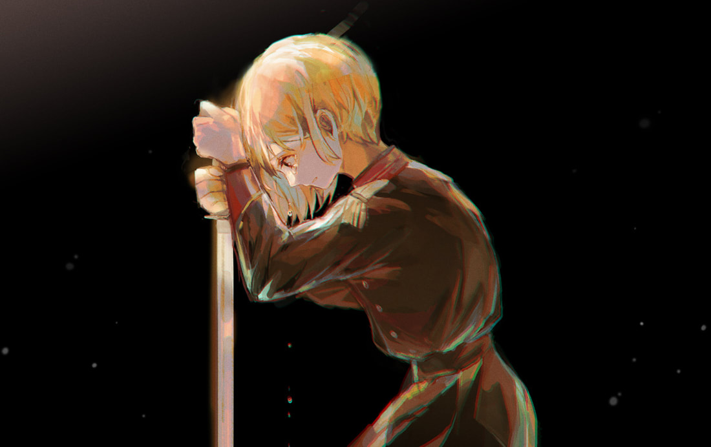

──為了成為某人正確的選擇。

她記得那個畫面。
湧出的鮮血與濃烈的腥臭，長官的身軀浸在深紅裡，沾染污血的鮮紅色頭髮狼狽地黏在頰邊，而手臂上深可見骨的撕裂傷猙獰地暴露在空氣裡。
那次任務之後，她聽過他人的嘆息，也見過自家小隊的隊友流乾了眼淚。
而在輾轉難眠終於入睡的夢裡，她也曾無數次將刀鋒送入鏡像另一側與自己相同的面孔上。
畫面碎裂，一張張望來的面孔扭曲而痛苦，彷彿都在說著──用著能劃出血淋淋傷口的語調──說著，妳憑什麼活得心安理得。
如同風吹過空盪盪的心口，風聲從堵不上的裂口呼嘯，彷彿自幽冥而來，在她經過已長年落鎖的辦公室前，在少一人的劍道練習場合，或是在任務還未能適應的人員分派時不間歇地響起。
是你的錯。
語句沉沉敲響獨自一人的空間，她收拾著被破壞的隨身物品殘骸，整理因缺損而對怪異感應失準的附魔武具，或是在還未熄燈的夜晚於寢室或戶外找尋再次遺失的個人物品。
她從來也不知道是誰做的，但她明白那充其量也是一種不甘心。
那些遺失物她有時能尋回，有時候不行，她也就習慣身邊的物品越來越少。
運氣好的話會有同僚會替自己留心並把遺失的物品歸還，雖不免被玩笑幾句，但她仍對此抱持感激。
有人因此失去了重要之物，她才能安然地生活至今，任誰都知道她的現今是建立在他人被剝奪之下。
那份痛苦已有他人承受，
所以如今她才能站在這裡。
為此她應該要感到痛苦並付出代價，如鏡像碎裂再也無法拼起，她應當要在靈魂刻上裂痕，或成為另一塊被硬生撕裂的血肉。
即使所有人都知道，即使她也如此深信。
無數次、無數次地──
但如果連我也這樣想，這一切就沒有意義了。
她緩緩步上走回寢室的路，將尋回的遺失物放回應當在的位置，沒有半分偏移。
為了能去相信那人所做是正確的。
為了能夠成為某人正確的選擇。
所以無論是自責，痛苦或後悔。
一直這樣下去也無妨。
無論隨之而來的是什麼，她都會懷抱同等份量的疼痛與期待，盡全力活成那個模樣。
──那個正確的模樣。
相關篇章：《已逝之日》那些日常的理所當然